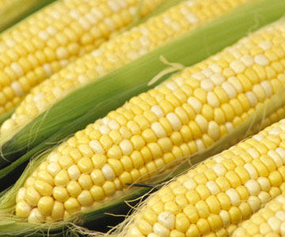

What are GMOs?
- Genetically modified organisms (GMOs)
- Used in agriculture
- In your grocery store

OTA
- Funded by organic industry
- Actively tries to bolster the organic industry
- Petitions the government to increase regulation on GMOs
Good GMOs
- Some GMOs are better than the original
Golden Rice
- Gold Color comes from beta-carotene
- Acts as a vitamin A supplement
Potatoes
- Unable to be bruised
- Keep longer and travel better
IRT study
- Study that stated rat health was negatively affected
- Repeatably falsified by several independent universities and organizations

Further studies
- GMO corn was found to have no negative effects even after several generations of rats

Summary
- GMOs are constantly attacked by interest groups
- Some GMOs are better than the original crop
- There is no scientific evidence against GMOs